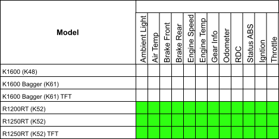

WunderLINQ Switch for BMW Documentation
Version 1.0
Introduction
First of all, Thank you for your purchase. The WunderLINQ was designed for riders by riders.
This documentation covers the install and usage of the WunderLINQ hardware on your motorcycle. Please review the document completely before attempting the install.
Requirements
You will need the following to install this hardware on your motorcycle.
- WunderLINQ
- Compatible BMW Motorcycle
Install
{kind=link}
{kind=link}
Access the rear of your motorcycle's cluster, this will vary depending on the model and year of your motorcycle. Please refer to OEM information on how to acces your motorcycles cluster.
{kind=link}
Carefully disconnected the cable from the cluster. There are small tabs on the sides that must be squeezed to unlock the connector.
{kind=link}
Carefully plug the WunderLINQ Switch into the cable you disconnected from the cluster.
{kind=link}
Carefully plug the WunderLINQ Switch into the rear of the cluster. Before re-assembling your motorcycle fully test the WunderLINQ.
{kind=link}
Turn the motorcycle ignition on, the WunderLINQ Switch LED should flash blue indicating its ready to be paired with your phone or tablet. Once paired and connected the LED, will stop flashing and remain on. At this point you are now ready to launch the WunderLINQ App and test. Once you have verified functionality re-assemble your motorcycle.
WunderLINQ App
Now that the WunderLINQ hardware is installed, test and setup your hardware with the WunderLINQ App. Please see our app documentation at the following link for more information.
Usage Notes
Below is the default mapping between Wunder Wheel input and keyboard input.

| Hand Controls | Keyboard Key | |
|---|---|---|
| Scroll Wheel Up | UP Arrow | |
| Scroll Wheel Down | DOWN Arrow | |
| Wheel Left | LEFT Arrow | |
| Wheel Right | RIGHT Arrow | |
| Rocker2 Switch Up | ESCAPE | |
| Rocker2 Switch Down | ENTER | |
| Wheel Left Long Press | ESCAPE | |
| Wheel Right Long Press | ENTER | |
| Rocker2 Switch Up Long Press | ||
| Rocker2 Switch Down Long Press | ||
| Rocker1 Switch Up | Switches controls back to OEM mode. | |
| Rocker1 Switch Down | When in WunderLINQ mode, this buttons toggles through controllable devices. | |
| Rocker1 Switch Down Long Press | Switches controls to the WunderLINQ. |
Compatibility
The WunderLINQ Switch for BMW is designed to work with the following motorcycles.
Model/Year Function Notes
R1200RT
2013-2018R1250RT
2019-CurrentK1600
2013-CurrentData Point Availability Matrix
{kind=link}
Firmware Updating
The WunderLINQ-DFU or WunderLINQ Device Firmware Updating app is ia seperate app used to update the software that actually runs on the WunderLINQ hardware. Firmware updates should only be applied if you need the new feature or bug fix.
Go to the Apple App Store and install the app.
Go to the Google Play Store and install the app.
It is very important to follow the steps as written, especially when it comes to pairing/unpairing steps.
{kind=link}
Unpair the WunderLINQ
To begin we will have your mobile device forget the WunderLINQ pairing. The initial launch screen will remind you that you will need to forget the WunderLINQ pairing and provide you with a button to open your Bluetooth settings.
{kind=link}
Once in your Bluetooth settings find your WunderLINQ under My Devices. Touch the blue icon next to the WunderLINQ device name.
{kind=link}
Select Forget. After you have removed the pairing you should restart your mobile device.
Update the WunderLINQ Firmware
After you’ve forgotten the pairing between your WunderLINQ and mobile device you are ready to update your WunderLINQ. Start by powering up the WunderLINQ by turning on your motorbike's ignition, the WunderLINQ LED should be flashing blue.
Do not attempt to update your WunderLINQ while the motorbike is running or if your motorbike or mobile device has a low battery.
{kind=link}
Your WunderLINQ device should be listed. If it isn't listed even after refreshing a few times, try replacing the WunderLINQ in the motobikes cradle.
{kind=link}
When you select the WunderLINQ, iOS will request you to pair it to the WunderLINQ. At this point, you want to select Cancel.
{kind=link}
Once connected to the WunderLINQ, we need to put it into DFU mode to accept an update. Touch the Enable DFU Mode button at the bottom of the screen. Once selected the WunderLINQ will reboot into DFU mode, this can be confirmed by a solid green LED. The app will return to the previous device list screen.
When you select the WunderLINQ, iOS will request you to pair to the WunderLINQ At this point, you want to select Pair.
{kind=link}
After a successful pairing and connection, you are presented with the firmware upgrade screen. If running firmware >= 1.7 you will see the currently installed version. Touch Select Firmware.
{kind=link}
Select the firmware version you would like to install and touch UPGRADE
{kind=link}
The firmware will now be uploaded to the WunderLINQ.
{kind=link}
After the upload has completed the WunderLINQ will reboot into its normal mode. You will now have to follow the steps to unpair the WunderLINQ again before you can repair and use the WunderLINQ app.
Troubleshooting
Additional Information
Firmware
Support
Other Links
WunderLINQ Documentation Source Code
Disclaimer
WARNING: The use of the WunderLINQ, a product manufactured by Black Box Embedded, LLC, on your motorcycle is at your own risk. This product is intended for off-road use only and should not be used on public roads or highways. Black Box Embedded, LLC shall not be liable for any damages, injuries, or harm caused by the use of this product. By using this product, you acknowledge and accept the risks associated with its use, and you agree to waive any claims you may have against Black Box Embedded, LLC for any damages, injuries, or harm caused by the use of this product. This product is intended for use by experienced riders only and should not be used by beginners or inexperienced riders. Always exercise caution and ride responsibly.
WunderLINQ products should always be installed by a qualified technician. If you are unsure of your ability to properly install a product, please have the product installed by your local motorcycle technician. Black Box Embedded, LLC takes no responsibility for damages caused by improper installation. WARNING: When installing electronics it is extremely important to pay close attention to how wires are routed, especially when mounting products to the front fender, front fork, or fairing of your motorcycle. Always be sure to turn the handlebars full left, and full right, and fully compress the suspension to ensure the wires will not bind and have enough slack for your motorcycle to operate properly.